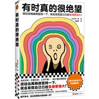
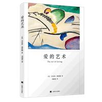

第11章练习4 - 透视、preserve-3d 与立体变换：立方体 / 轮播 / 翻转卡片
perspective透视距离（观察点到 z=0 平面的距离）。值越小透视越夸张，none 则无景深。
perspective-origin观察点位置，默认 50% 50%（正中）。改成角落能模拟仰视/俯视视角。
transform-style: preserve-3d让子元素在同一 3D 空间里叠加，而不是各自被压平。3D 结构的必备属性。
backface-visibility背面是否可见：hidden 时元素转到背面就"消失"，翻转卡片靠它避免镜像穿帮。
坐标轴：rotateX（左右翻）/ rotateY（水平门轴）/ rotateZ（平面转）/ rotate3d（任意轴）
绕 X 轴（红）
绕 Y 轴（绿）
绕 Z 轴（蓝）
轴 (1,1,0) 斜转
perspective: none（压扁成 2D）
perspective: 100px（夸张）
perspective: 400px（适中）
perspective: 800px（平缓）
origin: 20% 10%（左上观察）
origin: 90% 90%（右下观察）
translateZ 近大远小（三个盒子实际尺寸完全相同）
六个面各 rotate 定位到立方体表面，容器 preserve-3d 持续 rotateY（悬停加速）
鼠标移入 → 转速加快
4 张图片围成一圈：每张 rotateY(0/90/180/270°) + translateZ(260px)，整体匀速转圈（悬停暂停）

左右两个卡片动画完全相同，唯一区别是 backface-visibility
visible（默认）：翻到背面时还能看到镜像的正面，文字穿帮
hidden：背面朝外时正面自动隐藏，干净利落 ✓
实战：双面照片卡（正面 img/30.jpg，背面 img/31.jpg）

| 属性 / 函数 | 作用 | 常用值 | 默认值 |
|---|---|---|---|
perspective |
父元素设置景深 | 500px / 800px / none | none |
perspective-origin |
观察点位置 | 50% 50% / 20% 0% | 50% 50% |
transform-style |
子元素是否保留 3D 空间 | preserve-3d / flat | flat |
backface-visibility |
背面是否可见 | hidden / visible | visible |
translateZ / translate3d |
沿 Z 轴前后移动 | translateZ(100px) | 0 |
rotateX / rotateY / rotateZ |
绕三轴旋转 | rotateY(180deg) | 0 |
rotate3d |
绕任意轴旋转 | rotate3d(1, 1, 0, 45deg) | 0 |
scale3d |
三轴缩放 | scale3d(1, 1, 2) | 1 |
preserve-3d，子元素会被压平，立体结构瞬间变 2D；②不要在 3D 容器上加 overflow: hidden、filter、opacity < 1——浏览器会强制把该层压平（会生成新的层叠上下文）；③perspective 写在直接父元素上才生效；④拼立方体时 face 尺寸的一半就是 translateZ 的距离。